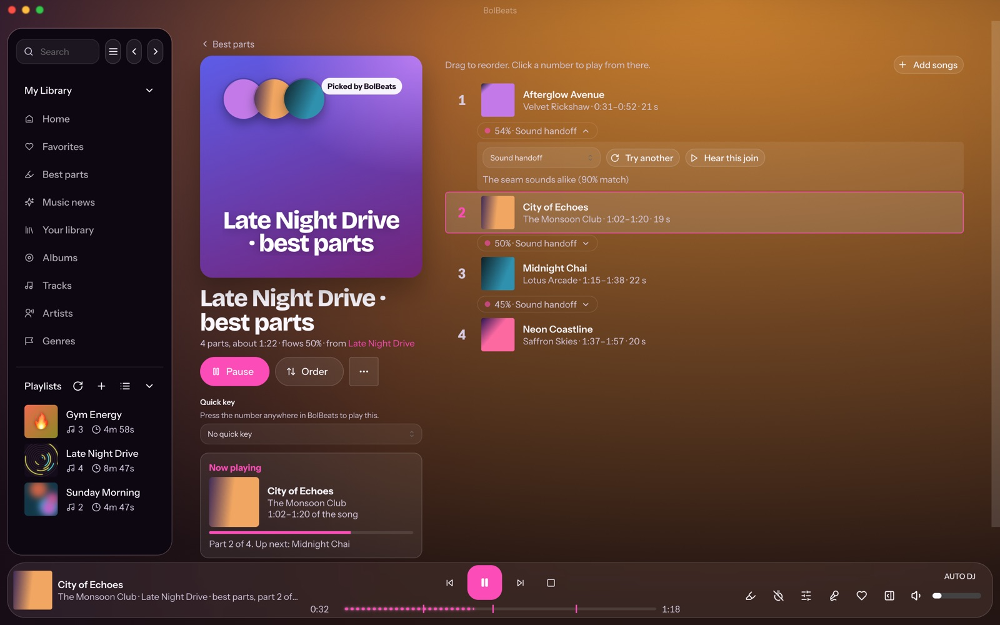
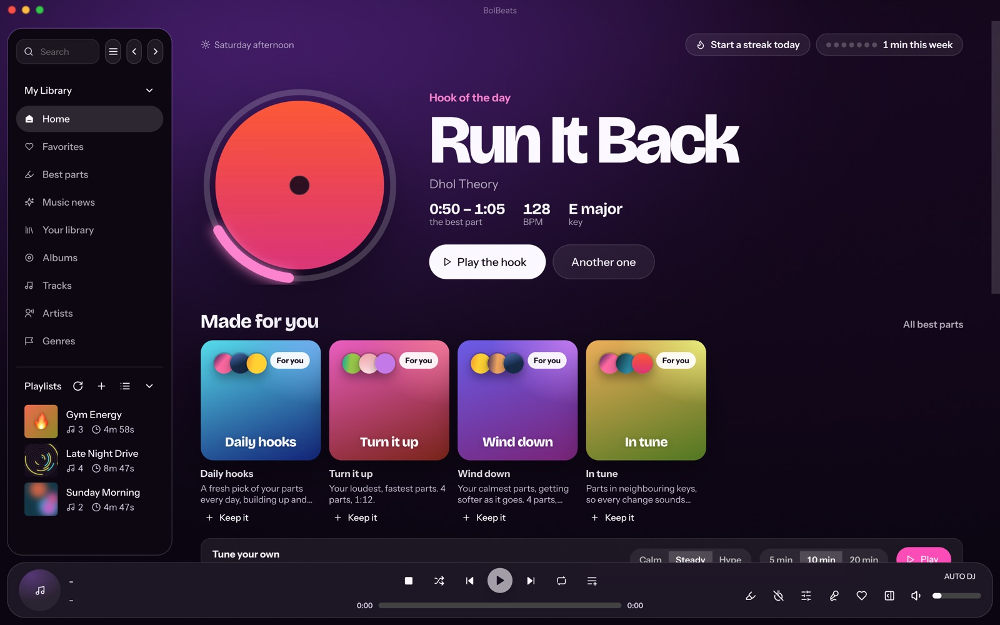
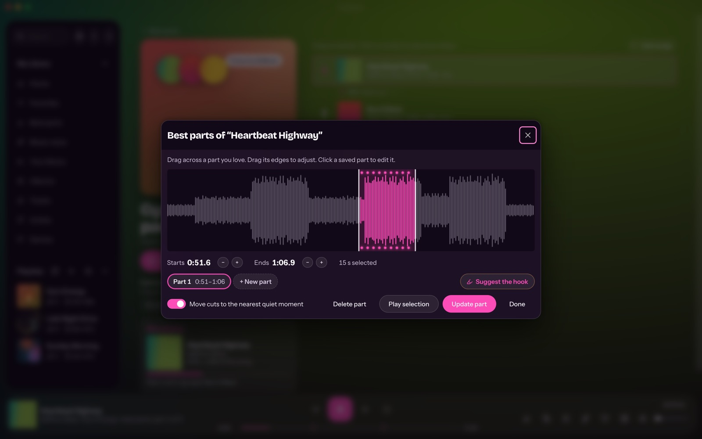

The best part of every song.
Mixed.
BolBeats is a free Mac music player that finds the hook of each song in your library and plays them back to back, like a DJ who only plays the good bits. Private, offline, open source.
Version 1.6.2 for Macs with Apple Silicon (M1 or later). Also for Windows (beta). Free, no account. What's new

What it does
Finds every best part
BolBeats listens to every song and finds its hook, plus any other section that sounds different and stands out, like a drop or a second hook. Each song decides how many.
Mixes like a DJ
Best-parts playlists join the parts with transitions picked from tempo and key: beat blend, filter sweep, bass swap, echo out and more.
Mashups
Songs with several parts take turns, A1, B2, A2, B1, wherever they fit. Drag parts into any order, hear any join, save the mix as a WAV.
Pick your own
Press B while a song plays, or drag across its waveform. Pick parts song by song and let BolBeats arrange them, or keep your own order.
Learns your taste
Thumbs up, thumbs down, skip, trim. BolBeats learns how long you like your parts and where they should start, and leaves out the ones you keep skipping.
Share a mix
Send a best-parts playlist with AirDrop or Messages as a tiny file. No audio inside: your friend's BolBeats rebuilds it from their own songs.
Folders become playlists
Drop songs into folders and they become playlists. A song saved twice shows once. Search everything.
Private by design
No account, no ads, no tracking. Your music never leaves your Mac; the library runs on your Mac only.
See it


Get started
- Download the DMG and drag BolBeats into Applications. It needs a Mac with Apple Silicon (M1 or later).
- The first time, if macOS says it can't check the app, open System Settings, Privacy & Security, and click Open Anyway.
- Put your music in your Music folder (folders are fine), or pick any folder in BolBeats.
- Open a playlist and press "Make best-parts version". That's it.
Questions
Is there a music player that plays only the chorus or best part of each song?
Yes, that is exactly what BolBeats does. It finds the chorus of every song in your library and can play only those parts, mixed together.
Can I make a DJ mix or mashup from my own MP3s on a Mac?
Yes. Make a best-parts playlist, choose Mashup order so songs take turns, adjust any transition, and save it as a WAV file.
Does it work with Spotify or Apple Music?
No. Streaming services don't allow other apps to cut up and mix their music. BolBeats plays the music files on your Mac: MP3, M4A, FLAC, WAV, OGG and more.
Is it free?
Yes, free and open source under the GPL-3.0 licence.